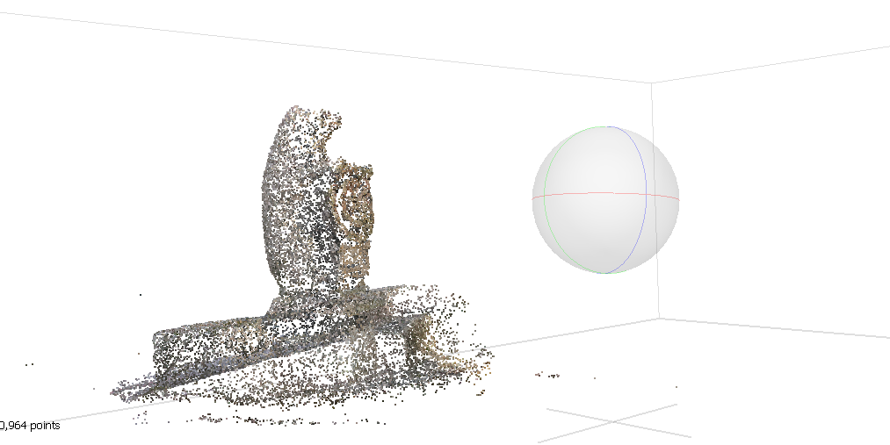

Bomarzo
We aim to create open-access three-dimensional (3D) educational model and an integrated virtual reality
environment of the site of Sacro Bosco (or Sacred Wood) in Bomarzo, Italy. We hope to create a tool
that will aid in the
monument’s preservation by allowing people to learn of its unique design without having to be physically
present at the site.
I used Agisoft Metashape and played around with different methods to achieve the following results. My early attempts at processing the model of the statues helped Dr. Garton’s colleague to secure a
national Futures grant and helped Dr. Garton to present the project to grant boards.
-
First try
First try at the model. A lot of noise and not very clear figure.
-

Adjusting cloud points
Adjusting parameters and cleaning up some noise. Still not very good. Processing took a long time so it was hard to play around and see quick results.
-

Trying dense cloud points
I combed through forum posts and watched some tutorials. I played around with the angle tagging, parameters, and crawled some more pics from Google. A world of difference!
This took me around 1.5 months including learning how to do baby version of photogrammetry. Each processing trial took around a day to finish. -
Final version & Demo
Final version!
This was the version that Dr. Garton and colleagues used for their grant applications.